CS184/284A Spring 2025 Homework 2 Write-Up
Link to webpage: https://cal-cs184-student.github.io/hw-webpages-jaewonheekyung/
Link to GitHub repository: https://github.com/cal-cs184-student/sp25-hw2-kmla
Overview
In this assignment, we work on implementing smooth curve and surfaces. In Section I, we design Bezier Curves and Surfaces. In Section II. we design triangular meshes using half-edge data structure.
Section I: Bezier Curves and Surfaces
Bezier Curves
Bezier curves and surfaces are widely used in computer graphics to represent smooth curves and surfaces. Bezier curves are defined by a set of control points, and the curve itself is a linear combination of these control points. (a.k.a Casteliajau's Algorithm) Bezier curves are defined by a set of control points and a curve made by Castelijau's algorithm.
Castelijau's algorithm
Castelijau's algorithm is a recursive algorithm to evaluate Bezier curves. It subdivides the control points by inserting a point using linear interpolation between two control points. This process is recursively repeated until we reach a single point. The final point we reached is the point on the Bezier curve.
Given n control points \( p_1, \dots, p_n \), we use linear interpolation using lerp function, defined
\( p_i' = \text{lerp}(p_i, p_{i+1}, t) = (1 - t) p_i + t p_{i+1} \)
Each call to this function will return the next set of control points \( p_1', \dots, p_{n-1}' \). We repeat this process until we reach a single point.Part 1: Bezier curves with 1D de Casteljau subdivision
Implementation to evaluate Bezier Curves
As explained as the Castelijau's algorithm, we implemented function std::vector
Here, we define function lerp() that calculates the linear interpolation between two points.
Function EvaluateStep() gets all the control points as an input and returns the next set of control points. We recursively call this fuction until we reach a single point on the Bezier curve.
Example of Bezier Curve
Below, we have created an example of 6 control points. Each image shows the next step of Castelijau's algorithm. The final image shows the Bezier curve we created. We also added an example of changing the t parameter.
|
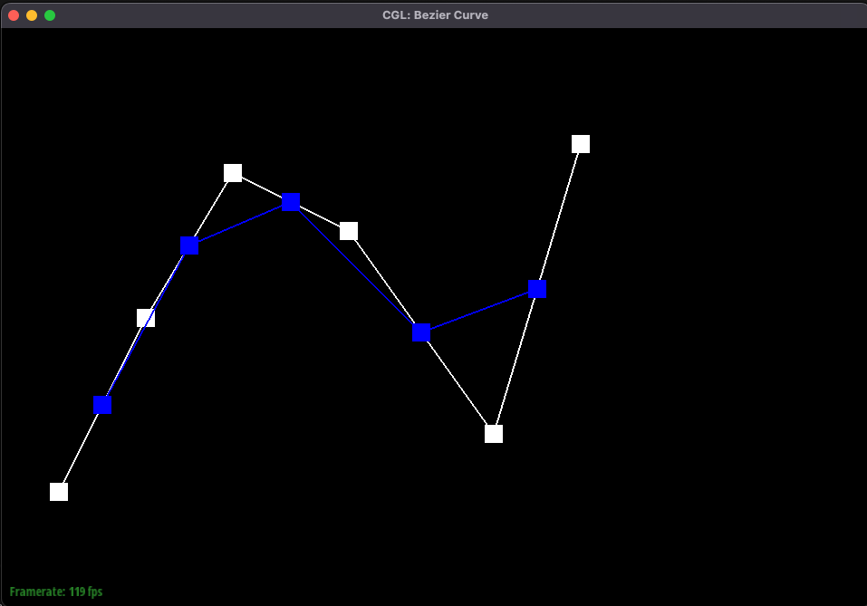
|

|
|
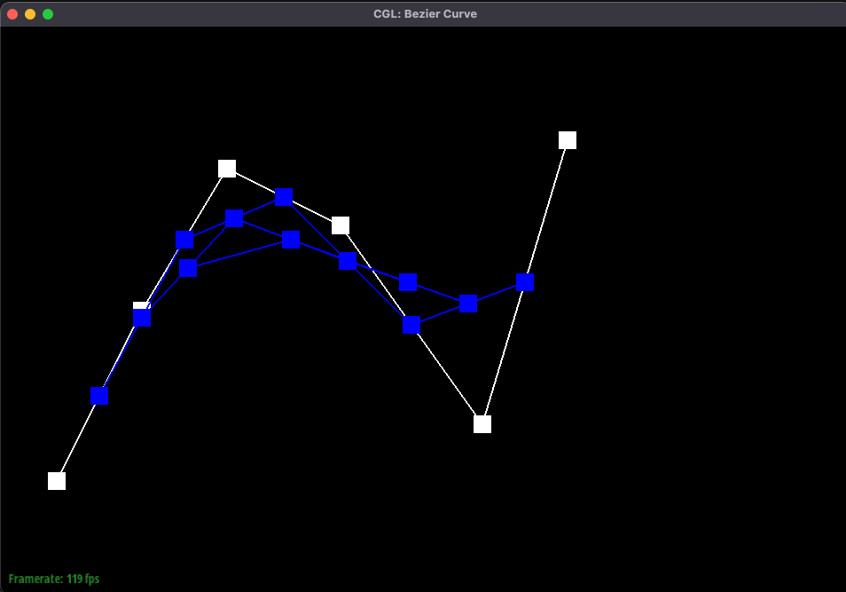
|
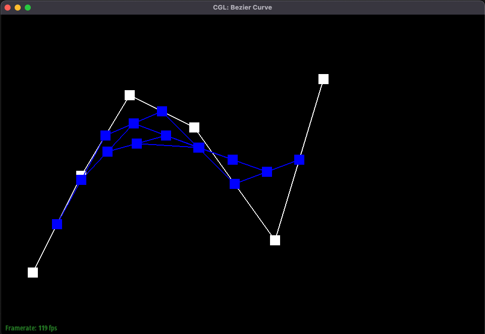
|
|
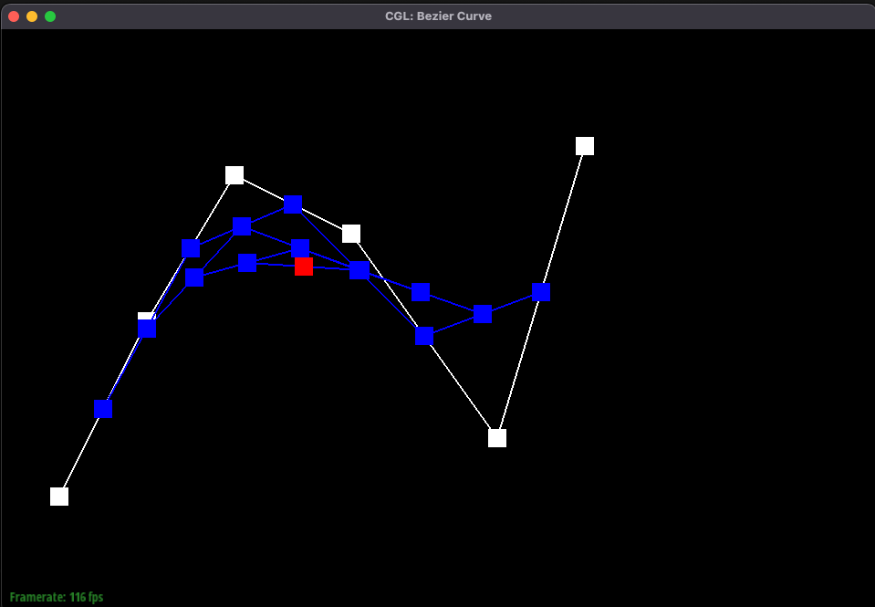
|
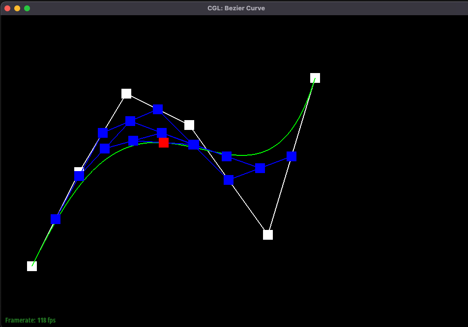
|
|
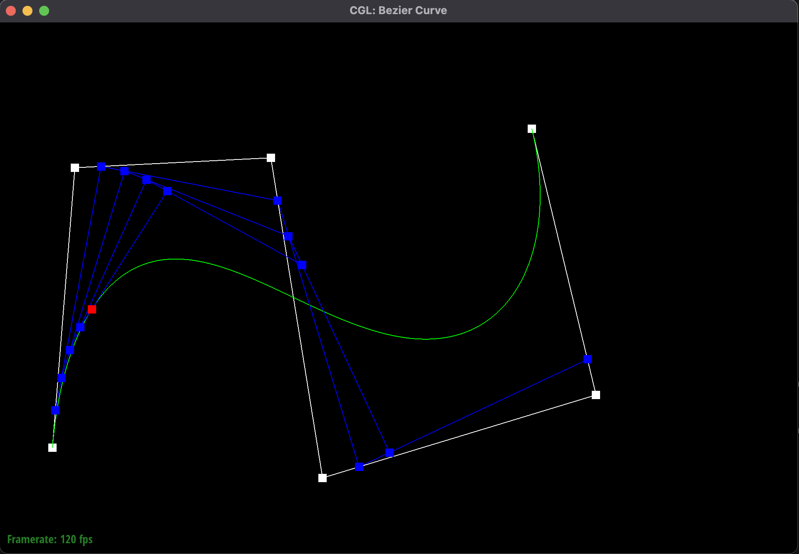
|
Part 2: Bezier surfaces with separable 1D de Casteljau
Bezier Surfaces
Bezier surface is defined in two parameters u and v. The control points are an array of nxn matrix.
Implementation to evaluate Bezier Surfaces
With the similar logic with the Bezier curves, we implemented function std::vector.
The function std::vector first evaluates a Bézier curve for each row of control points. Then, another Bézier curve is evaluated on the resulting intermediate points at parameter v, producing a single final point on the Bézier surface.
Using function Vector3D BezierPatch::evaluate1D , we fully evaluate de Casteljau's algorithm for a vector of points at scalar parameter t.
Also using function Vector3D BezierPatch::evaluate, we evaluate the Bezier surface at a given (u, v) parameter.
Example of Bezier surfaces
To check the implementation, we created a Bezier surface on the screen, drawing a teapot.
|
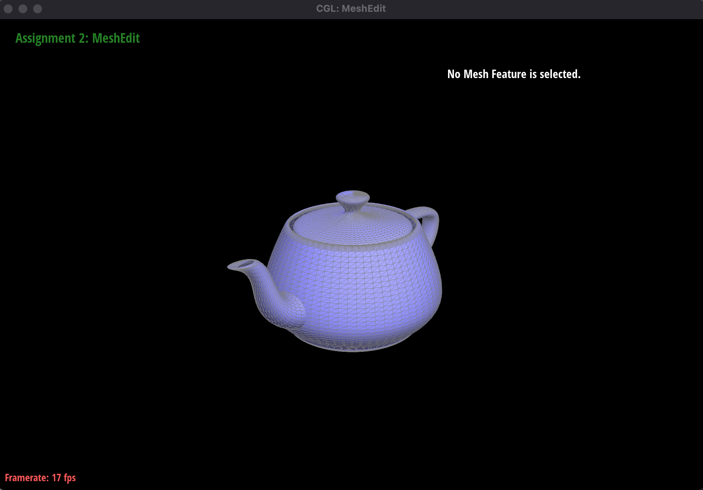
|
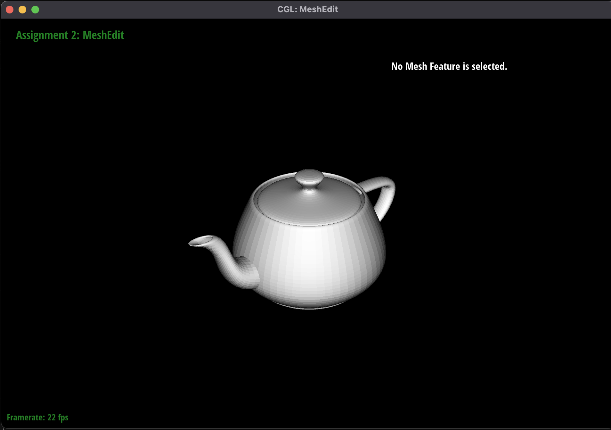
|
Section II: Triangle Meshes and Half-Edge Data Structure
Part 3: Area-weighted vertex normals
The area-weighted vertex normal is a method of averaging the the normals of the adjacent faces of a single vertex.
Since the normal of a face takes into account the positions of the respective vertices, averaging these adjacent normals allow us to smoothen the mesh graphically.
The greater the area of a trianlge face is, the more it will be weighted on that specific face in terms of the averaged normal.
To compute the area-weighted vertex normal, we compute all the area normals of the faces adjacent to a given vertex and average the normals out.
The below image from the lecture depicts the area-weighted vertex normal very well.
|
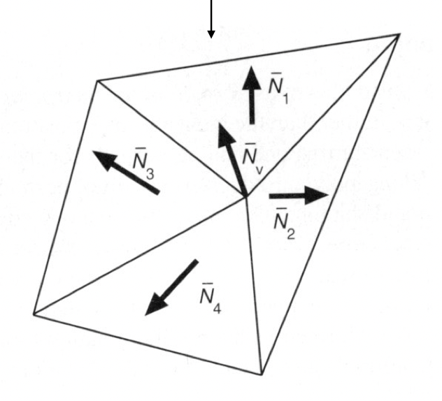
|
Step 1: Iterate through the halfedges of the reference vertex.
The normal vector is a cross product of two halfedges of a face.
In the Vector3D Vertex::normal( void ) const function, we set an arbitrary reference halfedge of the reference vertex by taking HalfedgeCIter h = this->halfedge().
Then, we iterate through the halfedges by using the twin and next schematics, i.e. h = h->twin()->next() with respect to the vertex by setting a do-while loop terminating at a condition of h != this->halfedge(), where the halfedge iterator comes back to the initial halfedge instance.
Step 2: Retrieve the two halfedges of every face and compute their cross product.
Inside every loop, we retrieve the two halfedges along the triangle face to compute their cross product. Here, we take advantage of the Halfedge data structure using the next() and twin() members.
The twin halfedge is HalfedgeCIter h_twin = h->twin(), and the twin of the next halfedge is HalfedgeCIter h_next_twin = h->next()->twin().
Now, we have the two halfedges of an adjacent face, we get the 3D vector positions of the two halfedges - Vector3D v1 = h_twin->position and Vector3D v2 = h_next_twin->position -
and invoke the built-in inline Vector3D cross( const Vector3D& u, const Vector3D& v ) function, passing in the two Vector3D objects.
Step 3: Add all the vector normals and normalize the sum vector.
Lastly, we add up all the Vector3D instances stored in a vector/list/set using the + operator built-in in the Vector3D class. Also, we use the unit() function in the Vector3D class that returns the normalized vector.
Return the normalized sum of the area-weighted normals of a vertex.
Comparison between the teapot shading with and without the vertex normals.
(1) Default Flat Shading
|
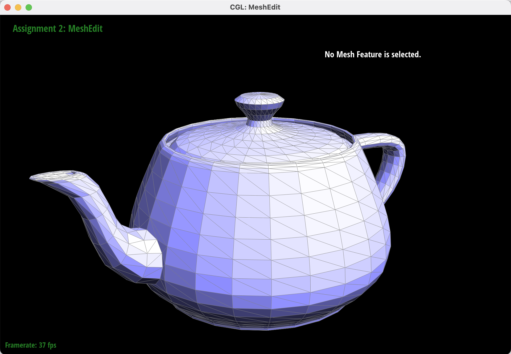
|
(2) Phong Shading
|
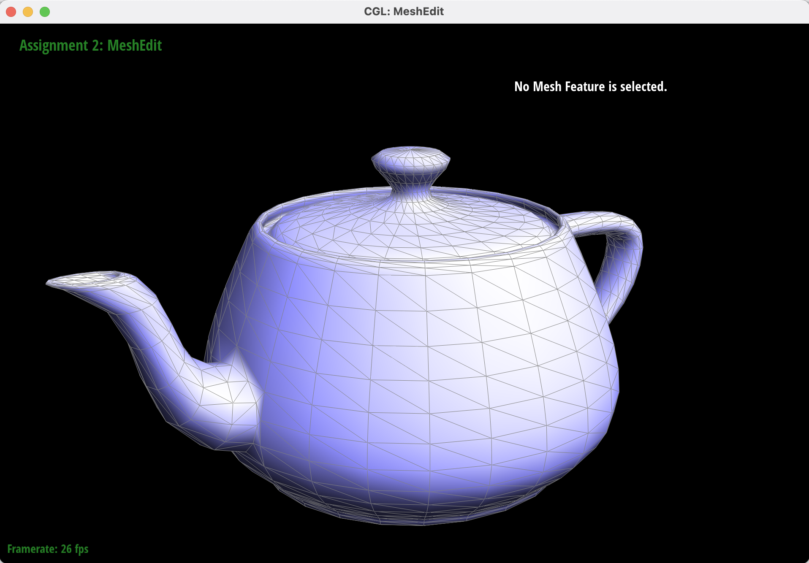
|
As shown in the two images, taking the area-weighted vertex normals smoothens the mesh surface. The advantages of using the area-weighted vertex normals come from reducing the distortion coming from the realtively smaller faces and improving the smootheness of a mesh.
Part 4: Edge flip
To modify a mesh, there are several methods, and one of them is flipping the edge. The important part is that we have to maintain the structure of the Half-edge structure consistent, ensuring every pointer is assigne correctly.We first start with two triangles (a, b, c) and (c, b, d). After flipping, the two triangles are removed and are replaced with two triangles (a, b, d) and (a, d, c).
Diagram of the Half-edge triangle data structure
|
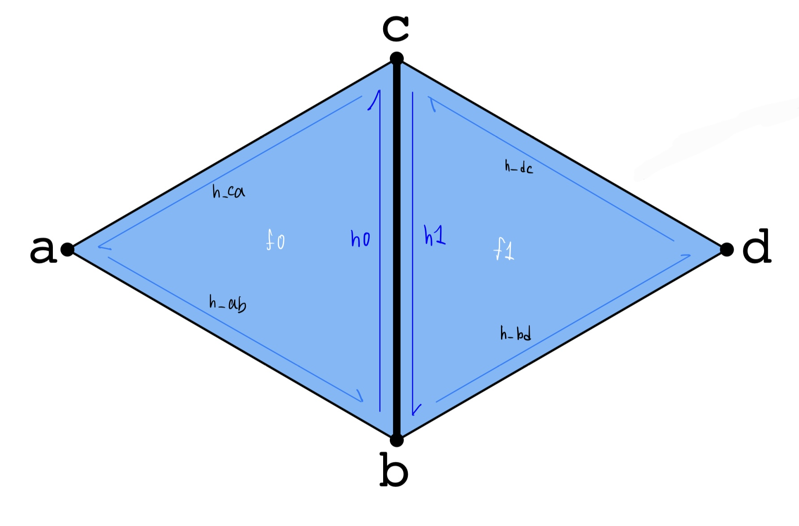
|
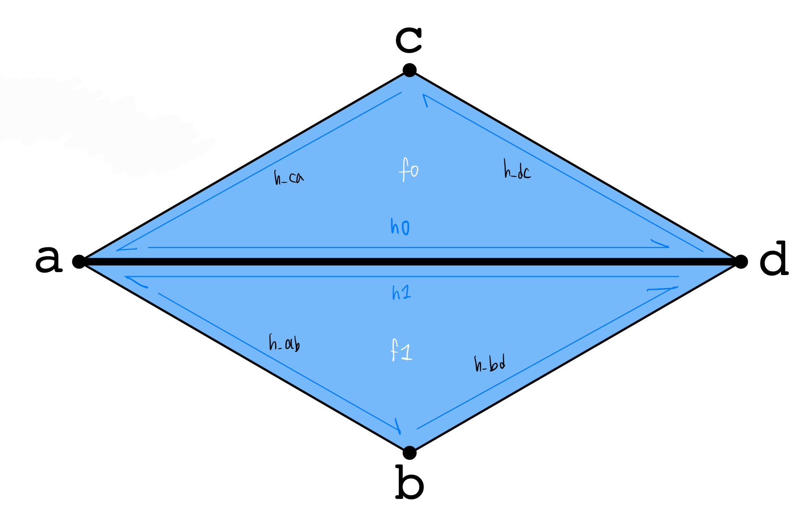
|
Example of Edge flip on teapot surface
|
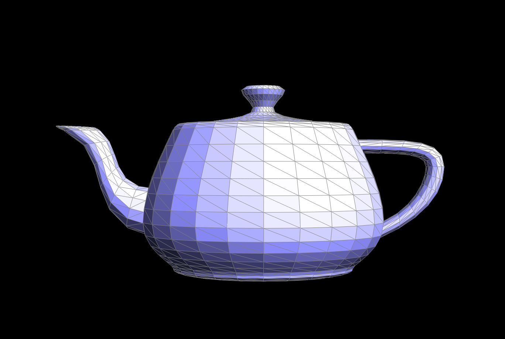
|
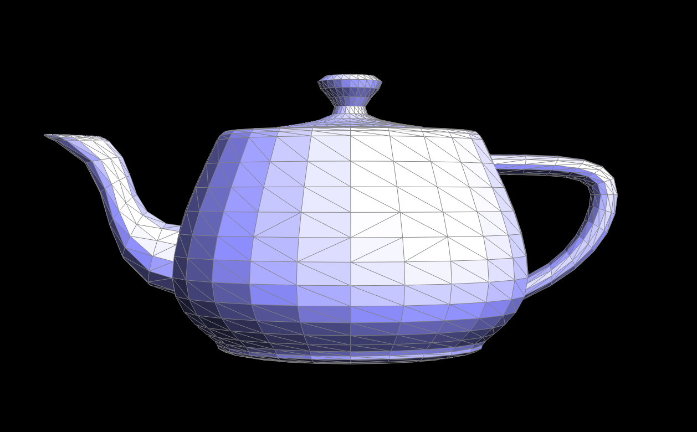
|
Part 5: Edge split
Like Edge flip, Edge split is a way to modify the mesh. We first start with two triangles (a, b, c) and (c, b, d). After spliting, the two triangles are removed and are replaced with four triangles (a, b, e), (b, c, e), (c, d, e), (d, a, e).
Here is the diagram we designed to properly assign the new vertices, edges and half edges.
Diagram of the Half-edge triangle data structure
|
|
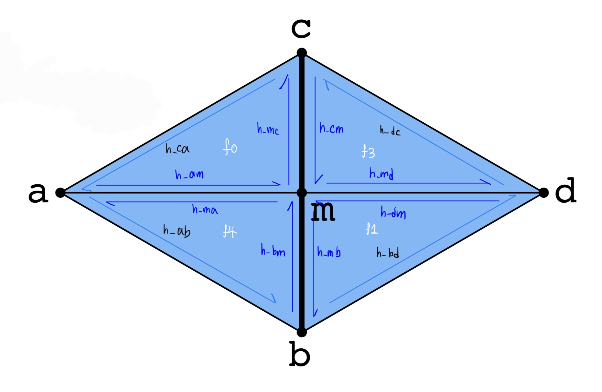
|
Here, edge split is more complicated than edge flip because we have to assign new vertices and edges. We have to make sure that the half-edge structure is consistent.At first it was confusing but after drawing the right diagram and printing the positions of the vertices, we could assign all the pointers properly.
Especially, it was though to ensure that every half-edge and edge, face, vertices were assigned properly. We used the function `check_for()` to debug everything is good.
Here are the images of the mesh of a teapot before and after edge split. We split three triangles.
|
|
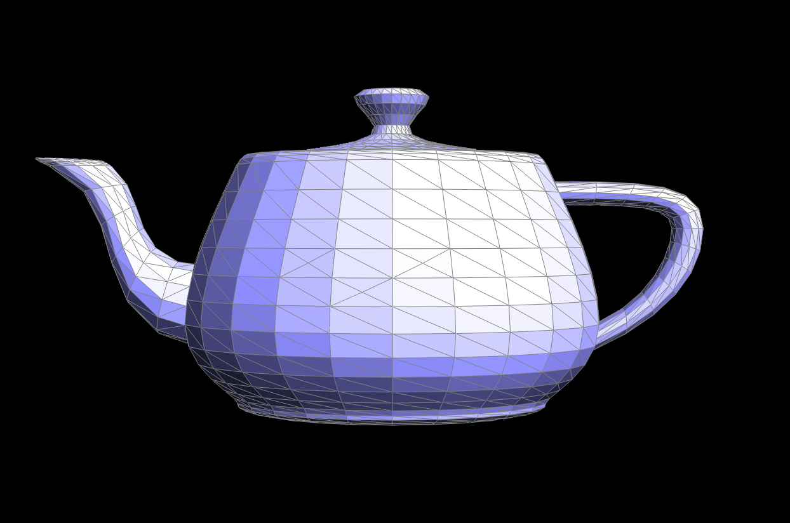
|
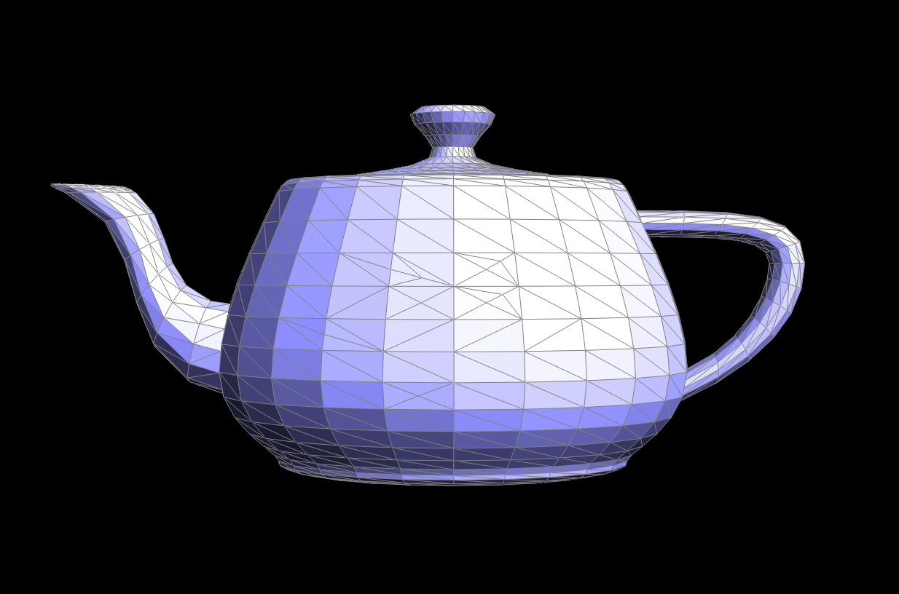
|
Part 6: Loop subdivision for mesh upsampling
Implementation
4-1 Loop Subdivision consists of four major sections: (1) Computing the new positions of the Vertices and Edges based on the weights and degree, (2) Splitting the original Edges, (3) Flipping the newly splitting Edges with old-new vertices, and (4) Reassigning and resetting the positions and flags for multi-layer subdivision.
Step 1: The new positions of each Vertex and Edge
|
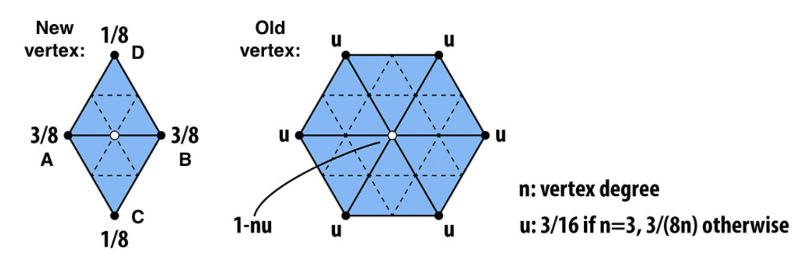
|
After the loop subdivision, since there will be more faces and edges created on the mesh, every vertex should have a new position to make the mesh smoother by its subdivided faces.
This new position will be computed all prior to splitting and flipping. We iterate through all the vertices using a while loop starting from mesh.verticesBegin() to mesh.verticesEnd().
Inside every loop, we again make a nested do-while loop that iterated through all the halfedges of the reference vertex to retrieve all the positions of the adjacent (neighbor) vertices.
This process is necessary to compute the weighted position of the newPosition of the vertex according to the formula given:
Vector3D new_position = (1 - n * u) * old_position + u * original_neighbor_position_sum; where n is the degree of the reference vertex, u is 3/16 if n is equal to 3 or 3/(8*n) otherwise, old_position is the position of the vertex,
and the original_neighbor_position_sum is the sum of the Vector3D position's of the adjacent vertices we are traversing through the inner loop.
Then, we can temporarily store the newly computed position of the vertex, which will be the new position after operating the entire 4-1 loop subdivision, inside the Vertex::newPosition Vector3D member.
These are the new positions of the old vertices of the entire mesh. What about the newly created vertices after splitting the edges?
If we split an edge, there will be a new Vertex created on the Edge that will be splitted. The new position of the newly allocated vertex will be stored in the Edge::newPosition of the Edge instance.
The formula of this new position is as follows: 3.0/8.0 * (a->position + b->position) + 1.0/8.0 * (c->position + d->position) where a and b are the vertices of the edge we are splitting and c and d are the neighbor vertices of the parallelogram (refer to the above image).
Implementation-wise, we iterate through all the edges of the entire mesh by setting an edge iterator and a while loop from mesh.edgesBegin() to mesh.edgesEnd().
Inside each loop, we get the four vertices a, b, c, and d and retrieve their Vector3D positions. These positions will be used as weighting them by 3/8 or 1/8 depending on their locations.
These are the new positions of the new vertices created by splitting the edges.
These new position computations are all done prior to splitting and flipping!
Step 2: Split the original Edges
|
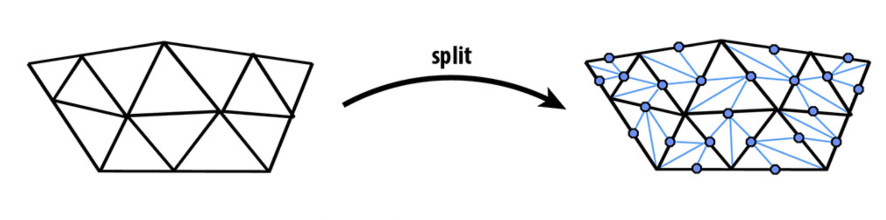
|
Splitting the edges are done in two layers of logic: first, retrieve the original edges of the mesh; second, only split the original edges.
Here, "original edges" mean the edges that appertains to the original mesh before doing any splitting or flipping. In the above image, all the black edges before splitting are the original edges.
We first iterate through all the edges of the mesh and retrieve the EdgeIter instances by storing these iterators in a vector/list/set. Besides retrieving these information, we do not split any edges yet.
We do so because while we split the edges of the mesh, there will be new edges created after invoking the HalfedgeMesh::splitEdge function. If we do not separate these original and new edges,
then the loop will end up being trapped in an infinite iteration splitting every edge inside the mesh including the new edges.
After retrieving the original edges, we now split these edges.
Here, instead of iterating through the entire edges of the mesh, we only loop through the original edges we have retrieved earlier using a for loop: (pseudocode) for (int i = 0; i to original_edges.size(); i++) {}.
By doing so, we are able to split only the original edges, obtaining the image above after-splitting with the blue edges created.
Step 3: Flip the new Edges with old-new vertices pair
|
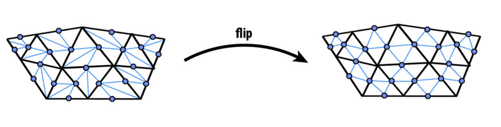
|
After splitting the original edges, we now have to split the edges. Among the blue edges from the image above, we want to flip only the edges that split the edge and the face first to make a 4-1 triangle partitions.
Meaning, the edges to be flipped should be limited to ones that are (1) new edges created by splitting, and (2) connect an old vertex and a new vertex.
Inside the while loop iterating through all the edges of the mesh, we check the conditions of if (edge_iter3->isNew) and if ((p0->isNew && !p1->isNew) || (!p0->isNew && p1->isNew)).
By doing so, we are able to filter out the edges to be flipped and form the 4-1 subdivided faces.
Step 4: Reassigning the positions of vertices and resetting the isNew flags
Since we have updated the entire mesh with 4-1 subdivided faces, edges, and vertices, we should assign the vertices' positions to the newly computed positions.
Every vertex object holds two members: Vector3D position and Vector3D newPosition. The Vertex::newPosition vectors are all pre-computed before splitting and flipping.
We can merely assign the Vertex::position to Vertex::newPosition by iterating through all the vertices of the mesh.
Again, we use a while loop iterating from mesh.verticesBegin() to mesh.verticesEnd(), and re-assign the v->position = v->newPosition.
After reassigning the Vertex positions, now, we have to reset the Edge::isNew flags.
This process is necessary because after one layer of loop subdivision, we would want to operate higher level loop subdivision based on the output from the previous layer of subdividing.
By resetting every Edge instances' Edge::isNew boolean back to false, the rest of the logic would perceive the newly subdivided edges as a pre-existing edge as if they were to be the original edges of the mesh.
This resetting logic is also done in a while loop iterating from mesh.edgesBegin() to mesh.edgesEnd().
Observations
|
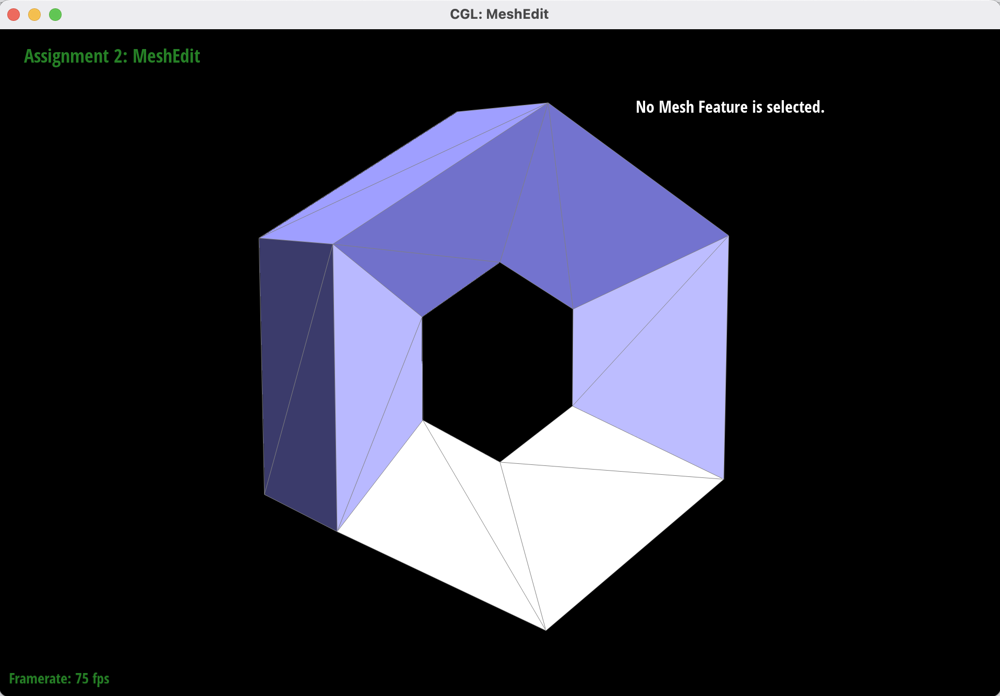
|
|
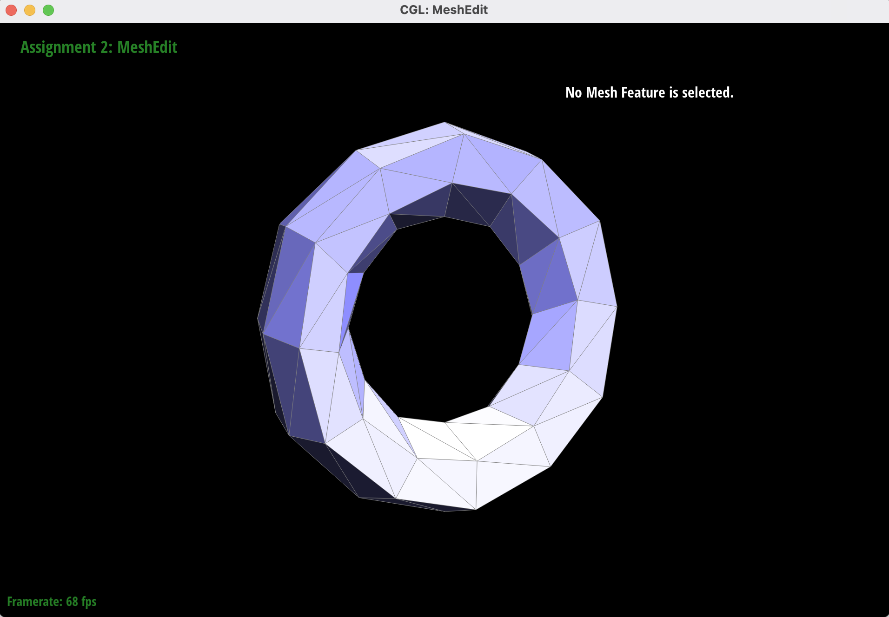
|
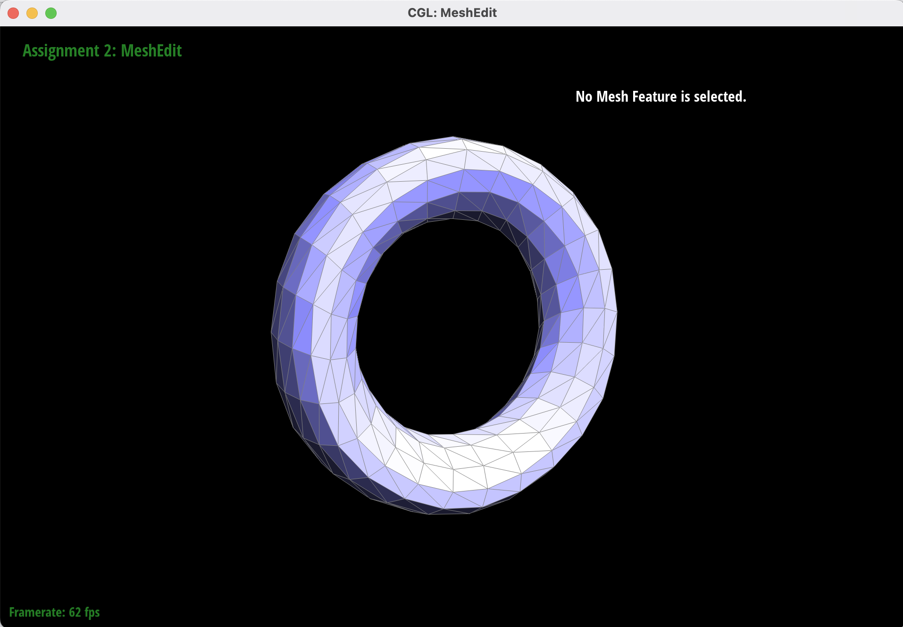
|
|
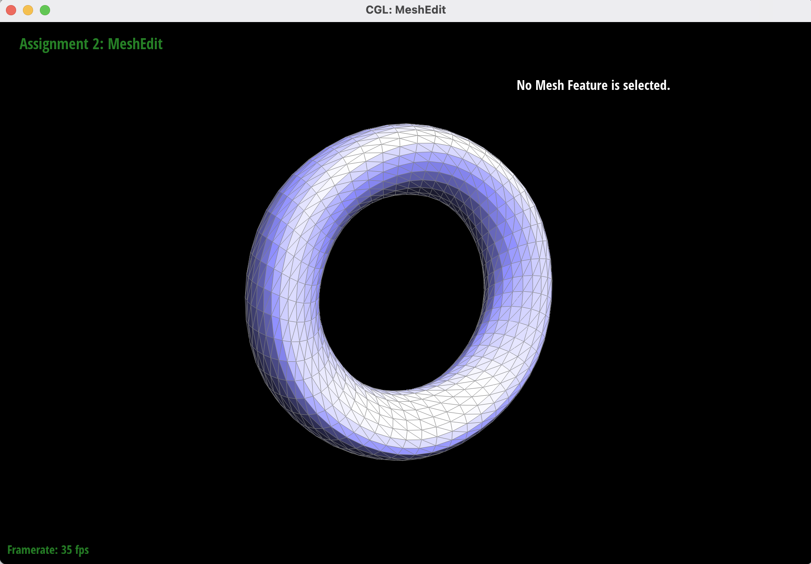
|
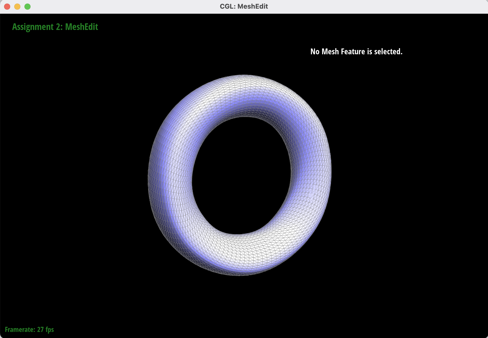
|
Q. How do meshes behave after loop subdivision. What happens to sharp corners and edges?
Answer: After loop subdivision, the meshed become smoother in terms of the surface texture.
As observed from the four figures above, a torus had sharp edges and corners before operating loop subdivision.
However, as more layers of loop subdivision are applied to it (from (i) to (iv)), the angle of each corner becomes more and more obtuse.
The more loop subdivision we apply to the mesh, the smoother the corner and edges become.
The contrast between the figures in (i), (ii), (iii), and (iv) becomes gradually clearer as the layer of subdivision becomes more complex.
Q. Can you reduce this effect by pre-splitting some edges?
Answer: One way to prevent the sharp edges and corners being smoothened is to pre-split the target area before apply the loop subdivision.
Pre-splitting adds more smaller faces and edges to the mesh, which will diminish the effect of averaging the neighbor vertices' positions.
Since adding more neighbor vertices may diminish the averaging of the position of a vertex, the less smoothened the sharp part of the mesh would be.
Repeated Subdivisions
|
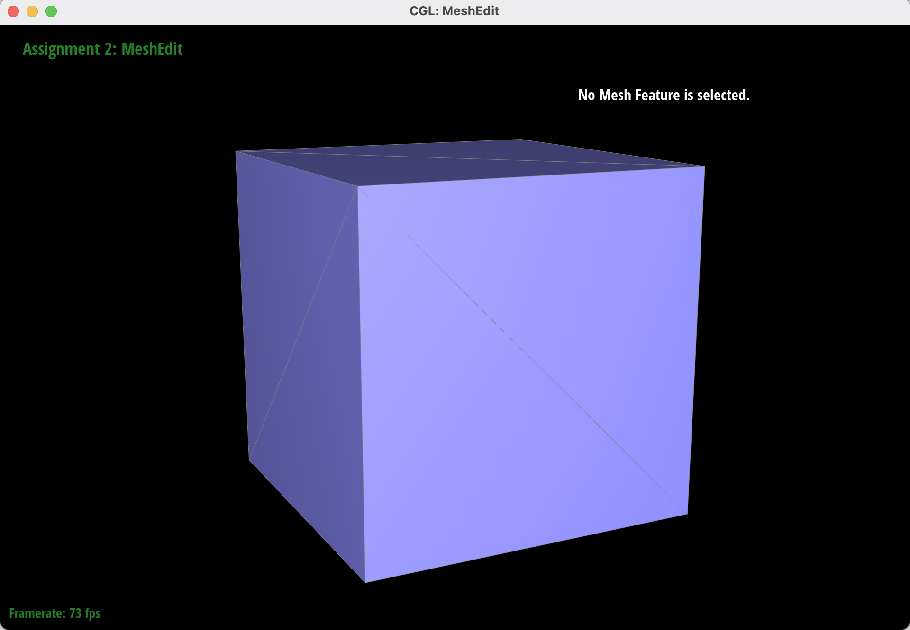
|
|
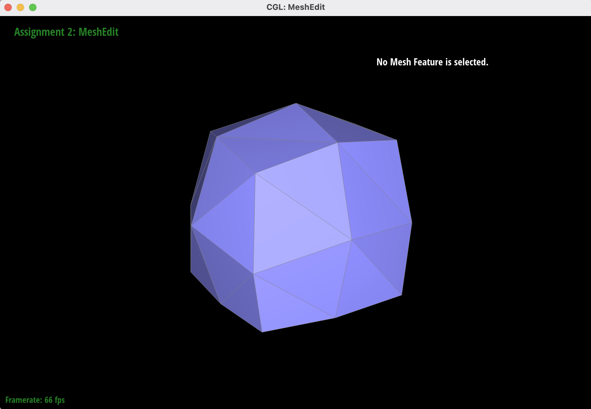
|
|
|
|
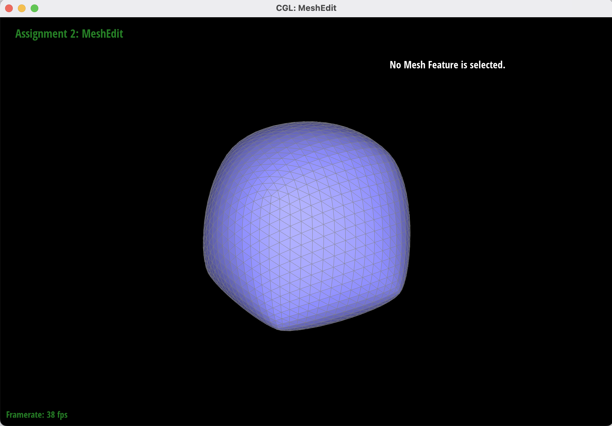
|
Asymmetric Effects and why they occur
Observing the layers of operating loop subdivision, the output mesh has an asymmetric structure.
In the transition from figure (iii) to (iv), it becomes clear that there exists a certin edge and corner of the sphere-like cubic structure that could not be smoothened by loop subdividing.
This is a typical side-effect of loop subdivision, since loop subdivision is highly dependent on the neighboring vertices.
As stated earlier, the extent of how loop subdivision smoothens a mesh depends on the number of neighboring vertices and the degree of each vertex.
In the cube's example, not all 8 vertices have an equal degree of neighboring vertices. This discrepancy in the degree contributes to the asymmetricity of the cube after applying layers of loop subdivision.
|
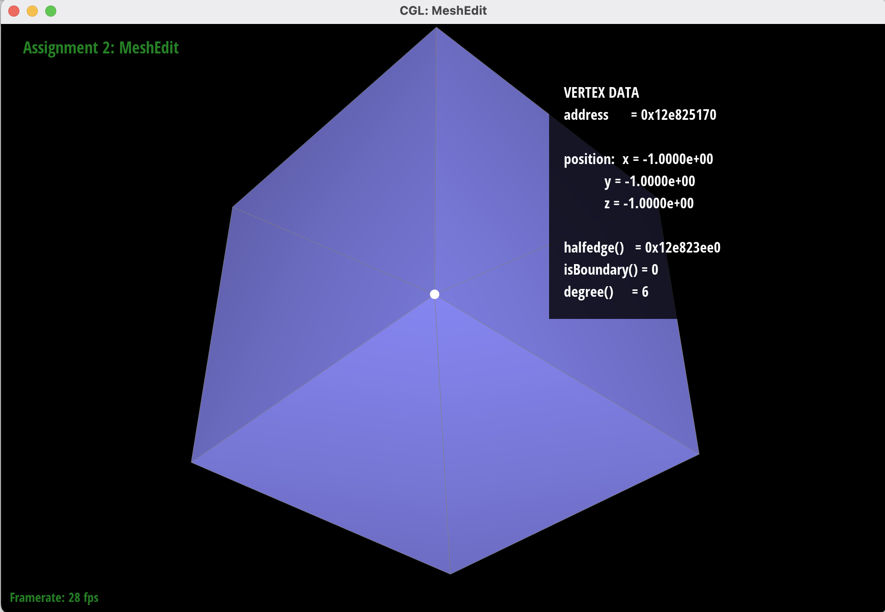
|
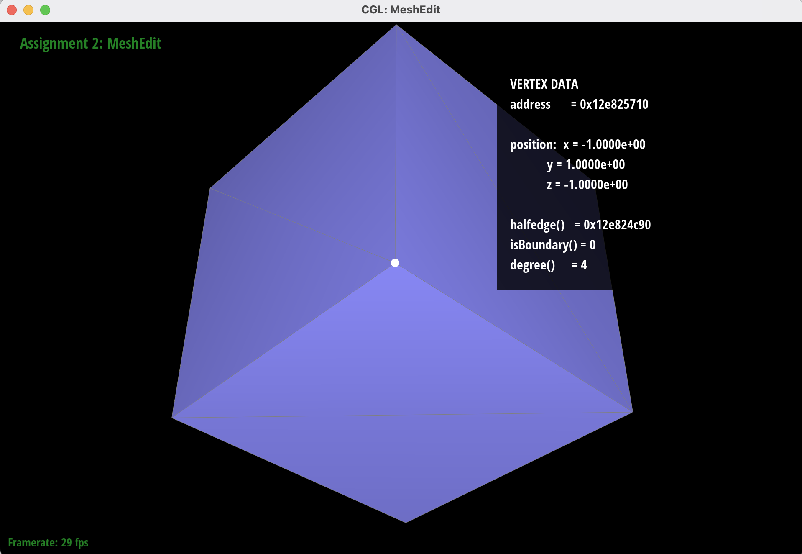
|
MeshResampler::upsample function, the Vertex::newPosition of each vertex is computed by (1 - n * u) * old_position + u * original_neighbor_position_sum
where this formula averages the neighbor vertices' positions.
Hence, it is significant to balancing the degree of every vertex of the mesh in order to make a symmetric mesh after multiple loop subdivisions.Pre-processing the Cube
We pre-processed the cube to make all 8 vertices have the same degree of 6 by splitting the edges. Then, the output mesh became symmetric.
|
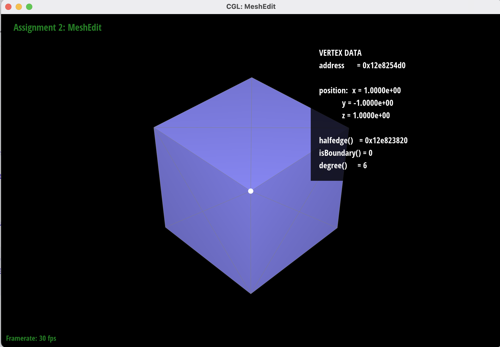
|
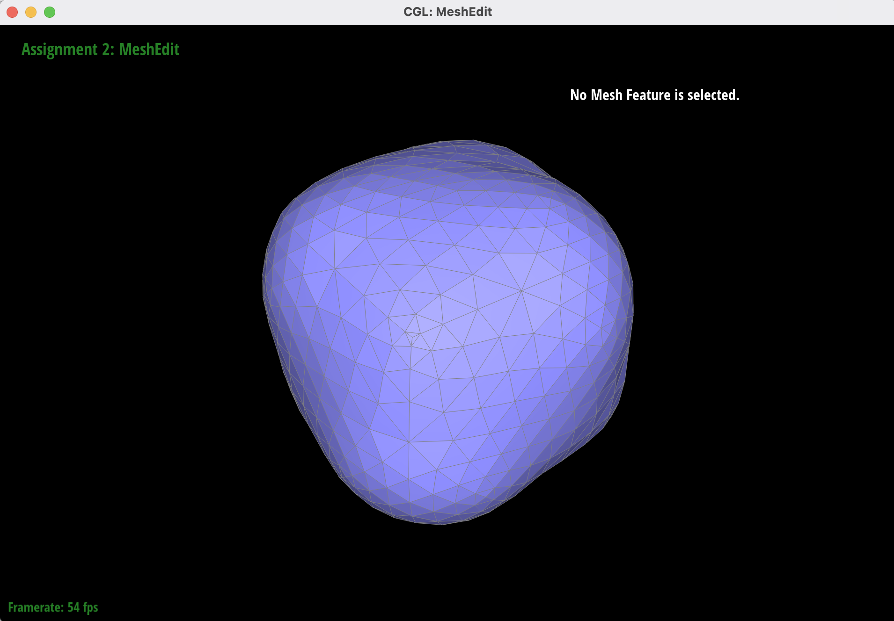
|